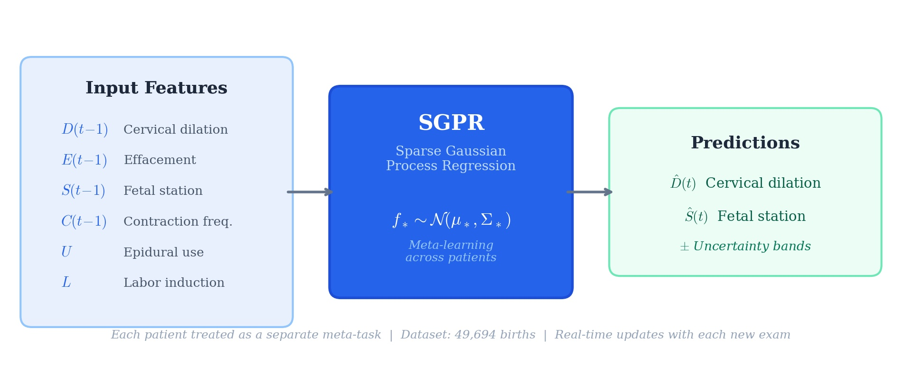
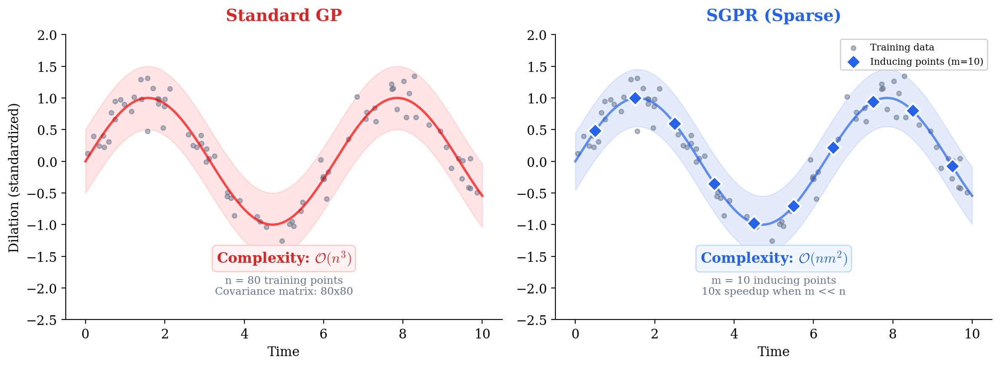
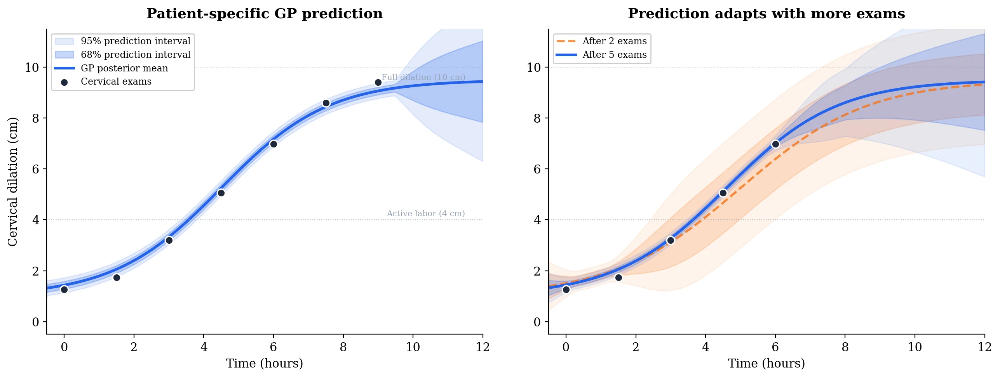
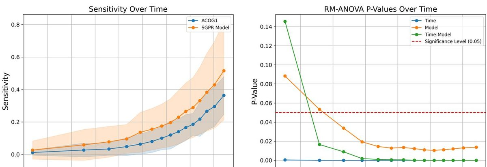

Model
SGPR
Sparse GP reduces complexity with inducing points (m « n).
PeriGen / NIH / NICHD
Predicting how labor will progress is one of the hardest problems in obstetrics. Every patient is different, yet for decades clinicians have relied on population-average curves (like the Friedman curve) that assume labor follows a fixed pattern. These curves don't update as new information arrives, and they can't tell you how confident the prediction is. Using a Sparse Gaussian Process model, we built a system that tracks each patient's labor in real time, adapts its predictions with every new cervical exam, and provides calibrated uncertainty estimates.
Sparse GP reduces complexity with inducing points (m « n).
GP posterior updates with each new cervical exam; predictions sharpen as labor progresses.
D(t-1), E(t-1), S(t-1), contractions, epidural, induction.
Forecasts update as new cervical exams arrive during labor.
Our SGPR model is trained on thousands of births and fine-tunes its prediction for each new patient as cervical exams arrive. It takes six inputs from the previous time step (cervical dilation, effacement, fetal station, contraction frequency, epidural use, and whether labor was induced) and predicts how dilation and station will evolve. The GP posterior updates in closed form with each exam, so predictions sharpen automatically as labor progresses.


Given \(n\) training points and test inputs \(X_*\), the GP posterior provides both a prediction and its uncertainty in closed form:
The mean gives the predicted dilation/station, and the covariance gives the uncertainty band. Both are computed analytically.
Full GP inference is \(O(n^3)\), which is impractical for 50,000 births. SGPR uses \(m \ll n\) inducing points to approximate the posterior. The general sparse variational bound is:
This reduces complexity to \(O(nm^2)\), making real-time bedside prediction practical.
As labor progresses, nurses record cervical dilation, fetal station, and timing at each exam, typically 3 to 12 exams per patient. This forms a sparse, irregular time series.
We use sparse inducing points to keep computation fast enough for real-time use. With nearly 50,000 training births, predictions need to come back in seconds.
Meta-learning lets the model specialize: after seeing just 2–3 exams from a new patient, it adjusts its predictions to match her specific labor pattern rather than the population average.
We compared our predictions head-to-head with WHO and ACOG labor curves to measure whether individualized forecasting actually improves clinical sensitivity.


E.F. Hamilton, T. Zhoroev, P.A. Warrick, A.L. Tarca, T.J. Garite, A.B. Caughey, et al.
Read on ScienceDirectT. Zhoroev, E.F. Hamilton, P.A. Warrick
Read on MDPI